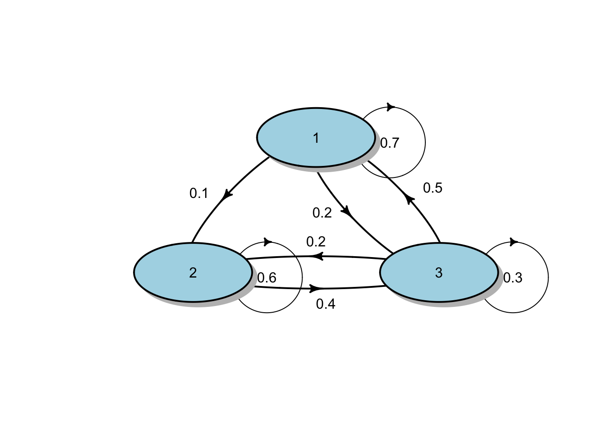
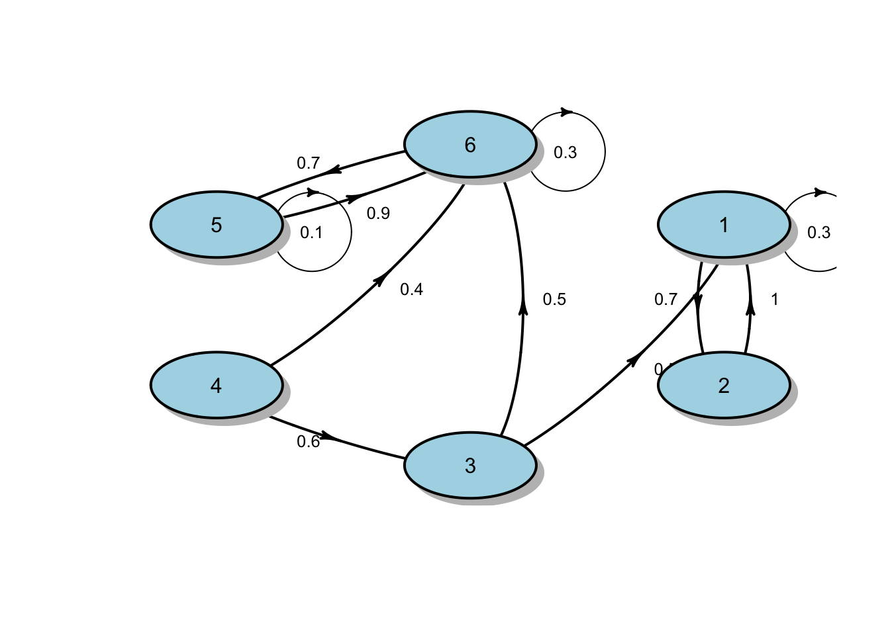

osptm = matrix(c(0.7,0.1,0.2, 0,0.6,0.4, 0.5,0.2,0.3), nrow = 3, byrow = TRUE)
osptm [,1] [,2] [,3]
[1,] 0.7 0.1 0.2
[2,] 0.0 0.6 0.4
[3,] 0.5 0.2 0.3Francois de Ryckel
November 12, 2022
November 12, 2022
This post is an introduction to Markov Chain with a presentation of Discrete Time Markov Chains.
A stochastic process is \(\{ X(t), t \in T \}\) is a collection of random variables indexed by a parameter t that belongs to a set T.
A discrete-time Markov Chain is a discrete-time stochastic process which state space S is finite such that: \[\mathbb{P}(X_{n+1} = j | X_0 = i_0, X_1 = i_1, X_2 = i_2, \dots, x_n = i) = \mathbb{P}(X_{n+1} = j | X_n = i) = P_{ij}\]
that is, the conditional probability of the process being in state j at time n + 1 given all the previous states depends only on the last-known position (state i at time n).
We denote the probability to go from state \(i\) to state \(j\) in n-steps by \(\bf{P}_{ij}^{(n)}\). It is also denoted as the n-steps transition probability matrix. That is for any time \(m >= 0, \bf{P}_{ij}^n = \mathbb{P}(X_{m+n} = j | X_m = i)\) . \(\bf{P}^{(n)} = \bf{P}^n\) based on the Chapman-Kolmogorov equation.
The Chapman-Kolmogorov equation states that for all positive integers \(m\) and \(n\) , \(\bf{P}^{(m+n)} = \bf{P}^m \cdot \bf{P}^n\) where P is a one-step probability transition matrix (a square matrix)
To model a Markov Chain, let’s first set up a one-step probability transition matrix (called here osptm).
We start with an easy 3 possible state process. That is the state space \(S = \{1, 2, 3\}\). The osptm will provide the probability to go from one state to another.
[,1] [,2] [,3]
[1,] 0.7 0.1 0.2
[2,] 0.0 0.6 0.4
[3,] 0.5 0.2 0.3We can always have a look at how the osptm looks like.
[,1] [,2] [,3]
[1,] 0.7 0.0 0.5
[2,] 0.1 0.6 0.2
[3,] 0.2 0.4 0.3diagram::plotmat(osptm_transposed, pos = c(1, 2), arr.length = 0.3,
box.col = "lightblue", box.prop = 0.5, box.size = 0.12, box.type="circle",
self.cex = 0.6, self.shifty=-0.01, self.shiftx = 0.15)
The markovchain package can provide us with all the state characteristics of a one-step probabilty transition matrix.
library(markovchain)
osptm_mc <- new("markovchain", transitionMatrix = osptm)
recurrentClasses(osptm_mc)[[1]]
[1] "1" "2" "3"list()character(0)[1] 1 1 2 3
[1,] 0.4651 0.2558 0.2791The next step is to calculate, for instance, what is the probability to go from state 1 to state 3 in 4 steps.
[,1] [,2] [,3]
[1,] 0.5021 0.2303 0.2676
[2,] 0.3860 0.3104 0.3036
[3,] 0.4760 0.2483 0.2757Looking at the result, we can see that the probability to go from State 1 to State 3 in 4 steps is 0.2676
We can also calculate the unconditional distribution after 4 steps
Using a slightly more interesting one-step probability transition matrix having 6 different states.
#specifying transition probability matrix
osptm<- matrix(c(0.3,0.7,0,0,0,0,1,0,0,0,0,0,0.5,0,0,0,0,0.5, 0,0,0.6,0,0,0.4,0,0,0,0,0.1,0.9,0,0,0,0,0.7,0.3), nrow=6, byrow=TRUE)
osptm [,1] [,2] [,3] [,4] [,5] [,6]
[1,] 0.3 0.7 0.0 0 0.0 0.0
[2,] 1.0 0.0 0.0 0 0.0 0.0
[3,] 0.5 0.0 0.0 0 0.0 0.5
[4,] 0.0 0.0 0.6 0 0.0 0.4
[5,] 0.0 0.0 0.0 0 0.1 0.9
[6,] 0.0 0.0 0.0 0 0.7 0.3osptm_transposed = t(osptm)
diagram::plotmat(osptm_transposed, arr.length = 0.3, arr.width = 0.1,
box.col = "lightblue", box.prop = 0.5, box.size = 0.09, box.type="circle",
cex.txt = 0.8, self.cex = 0.6, self.shifty=-0.01, self.shiftx = 0.13)
[[1]]
[1] "1" "2"
[[2]]
[1] "5" "6"[[1]]
[1] "3"
[[2]]
[1] "4"character(0)Warning in period(osptm_mc): The matrix is not irreducible[1] 0 1 2 3 4 5 6
[1,] 0.0000 0.0000 0 0 0.4375 0.5625
[2,] 0.5882 0.4118 0 0 0.0000 0.0000We can see that there are 2 possible steady states. Hence the Markov Chain is non-ergodic.